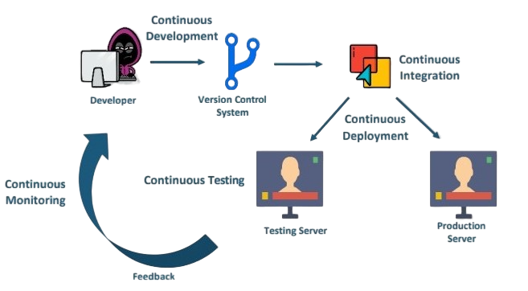
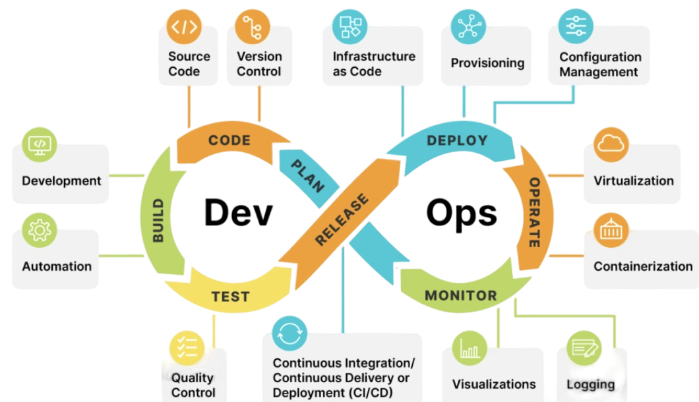

Define DevOps
DevOps is the combination of cultural philosophies, practices, and tools that increases an organization’s ability to deliver applications and services at high velocity: evolving and improving products at a faster pace than organizations using traditional software development and infrastructure management processes. This speed enables organizations to better serve their customers and compete more effectively in the market.
How DevOps Works
Under a DevOps model, development and operations teams are no longer “siloed.” Sometimes, these two teams are merged into a single team where the engineers work across the entire application lifecycle, from development and test to deployment to operations, and develop a range of skills not limited to a single function.
In some DevOps models, quality assurance and security teams may also become more tightly integrated with development and operations and throughout the application lifecycle. When security is the focus of everyone on a DevOps team, this is sometimes referred to as DevSecOps.
These teams use practices to automate processes that historically have been manual and slow. They use a technology stack and tooling which help them operate and evolve applications quickly and reliably. These tools also help engineers independently accomplish tasks (for example, deploying code or provisioning infrastructure) that normally would have required help from other teams, and this further increases a team’s velocity.

Benefits of DevOps
Speed
Move at high velocity so you can innovate for customers faster, adapt to changing markets better, and grow more efficient at driving business results. The DevOps model enables your developers and operations teams to achieve these results. For example, microservices and continuous delivery let teams take ownership of services and then release updates to them quicker.
Rapid Delivery
Increase the frequency and pace of releases so you can innovate and improve your product faster. The quicker you can release new features and fix bugs, the faster you can respond to your customers’ needs and build competitive advantage. Continuous integration and continuous delivery are practices that automate the software release process, from build to deploy.
Reliability
Ensure the quality of application updates and infrastructure changes so you can reliably deliver at a more rapid pace while maintaining a positive experience for end users. Use practices like continuous integration and continuous delivery to test that each change is functional and safe. Monitoring and logging practices help you stay informed of performance in real-time.
Scale
Operate and manage your infrastructure and development processes at scale. Automation and consistency help you manage complex or changing systems efficiently and with reduced risk. For example, infrastructure as code helps you manage your development, testing, and production environments in a repeatable and more efficient manner.
Improved Collaboration
Build more effective teams under a DevOps cultural model, which emphasizes values such as ownership and accountability. Developers and operations teams collaborate closely, share many responsibilities, and combine their workflows. This reduces inefficiencies and saves time (e.g. reduced handover periods between developers and operations, writing code that takes into account the environment in which it is run).
Security
Move quickly while retaining control and preserving compliance. You can adopt a DevOps model without sacrificing security by using automated compliance policies, fine-grained controls, and configuration management techniques. For example, using infrastructure as code and policy as code, you can define and then track compliance at scale.
What Is DevOps Engineering
A DevOps engineer is a versatile IT professional with comprehensive expertise in development and operations. They excel in coding, managing infrastructure, system administration, and utilizing DevOps toolchains. Alongside technical prowess, these engineers showcase strong interpersonal skills as they collaborate across organizational boundaries to foster a more unified work environment.
Their skill set extends to a deep comprehension of prevalent system architectures, provisioning, and administration. Additionally, they are well-versed in developer toolsets and practices, including employing source control, conducting code reviews, crafting unit tests, and embracing agile principles.
DevOps Engineerimg Role and Responsibility
The following sections will acquaint you with the roles and responsibilities of a DevOps engineer:
--Diverse Responsibilities: The role of a DevOps engineer varies among organizations, typically involving a blend of release engineering, infrastructure provisioning, system administration, security, and DevOps advocacy.
Release Engineering: Involves tasks related to building and deploying application code. The methods and tools utilized depend on factors such as programming language, pipeline automation level, and the infrastructure's nature (on-premise or cloud). This can encompass managing CI/CD tools or developing custom build/deploy scripts.
Infrastructure Provisioning and System Administration: Encompasses deploying and maintaining servers, storage, and networking resources necessary for hosting applications. In on-premise settings, it may involve overseeing physical servers, storage devices, switches, and virtualization software. For cloud-based or hybrid setups, the focus shifts to provisioning and managing virtual instances of these components.
DevOps Advocacy: Often underestimated yet crucial, this role involves promoting and educating the DevOps culture within the organization. As a subject matter expert, the DevOps engineer guides and educates team members, aiding in the smooth transition to a DevOps mindset, which can otherwise be disruptive and perplexing for the engineering team.
